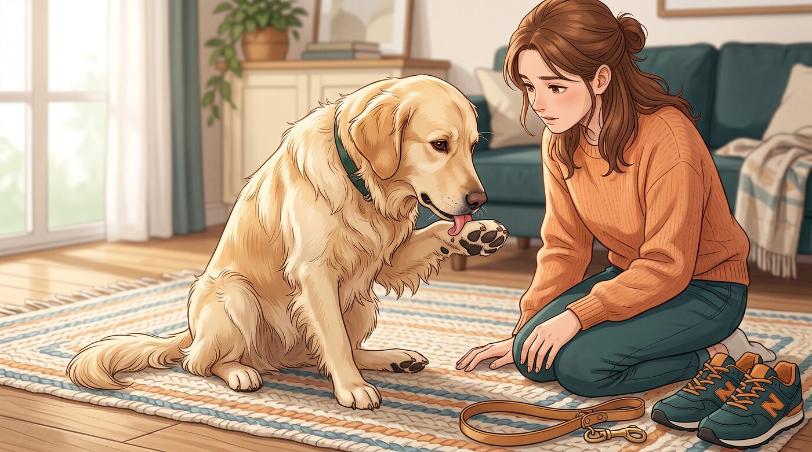
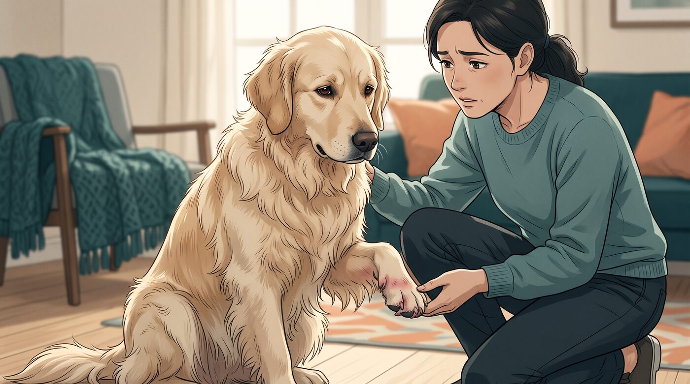
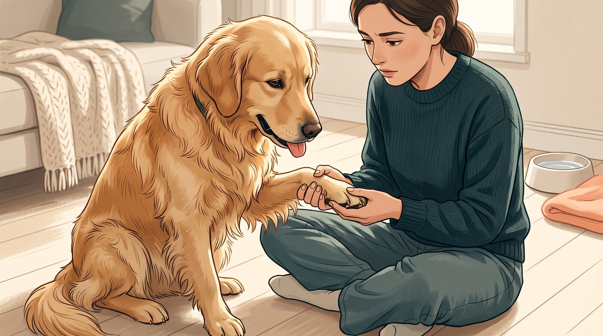
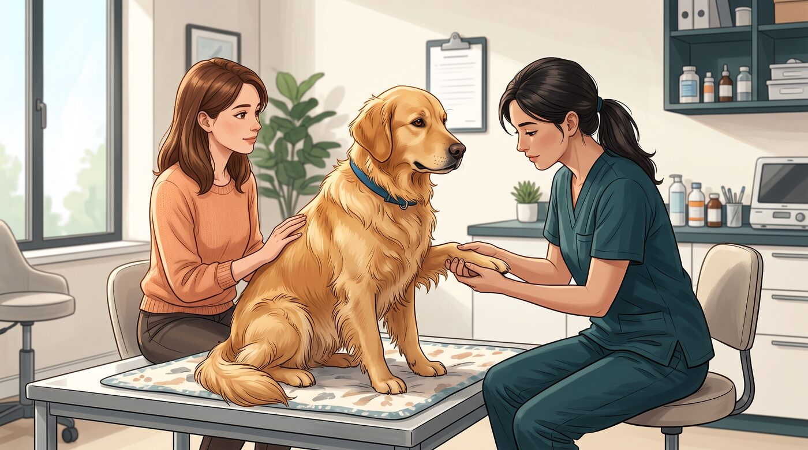

Eu confesso que, quando vejo um cachorro lambendo as patas de vez em quando, não penso imediatamente que existe algum problema. Cães se limpam. Faz parte do comportamento deles.
O que muda completamente a situação é quando aquela lambida ocasional começa a virar um hábito: o cachorro para, senta e começa a lamber a mesma pata durante vários minutos. Depois volta. E volta novamente.
E aí surge aquela dúvida: "Ele está apenas se limpando ou está tentando me dizer que alguma coisa está incomodando?"
A resposta pode envolver desde uma irritação simples até alergias, parasitas, ferimentos ou inflamações. Por isso, mais importante do que observar se ele lambe é perceber quanto, onde e com que frequência isso acontece.
1. Uma lambida ocasional pode ser completamente normal
Antes de pensar em doença, eu começaria pelo mais simples.
Cães utilizam a boca e a língua para explorar o ambiente e também para realizar sua higiene. Uma lambida ocasional nas patas, especialmente depois de uma caminhada ou de alguma atividade, não significa necessariamente que exista um problema.
O que chama minha atenção é quando o comportamento deixa de ser ocasional.
Se o cachorro passa a interromper outras atividades para lamber as patas, insiste sempre na mesma região ou parece não conseguir parar, já temos uma situação diferente.
A frequência e a persistência são pistas importantes.
2. Coceira é uma das causas mais comuns
Imagine sentir uma coceira persistente no pé.
Provavelmente você também tentaria fazer alguma coisa para aliviar.
Com o cachorro acontece algo parecido.
A coceira pode fazer com que ele lamba, morda ou mastigue as próprias patas. Entre as causas possíveis estão alergias ambientais, alergias alimentares e parasitas.
E existe um detalhe interessante: as patas estão entre as regiões frequentemente afetadas por alergias de pele.
Por isso, se o cachorro começa a lamber as quatro patas com frequência, principalmente acompanhado de coceira em outras partes do corpo, vale observar o quadro como um todo.
3. E se ele lambe apenas uma pata?

Aqui eu prestaria ainda mais atenção.
Quando apenas uma pata está incomodando, pode existir uma causa localizada.
Pode ser uma pequena lesão, corte, irritação, picada de inseto ou até algum corpo estranho preso entre os dedos.
Eu gosto de fazer uma inspeção visual simples: olhar, não cutucar.
Observe a almofadinha, as unhas e principalmente o espaço entre os dedos.
Procure sinais como:
- Vermelhidão
- Inchaço
- Feridas
- Objetos presos
- Sangramento
- Pele irritada
- Secreção
- Alteração na forma de pisar
Se o cachorro demonstra dor quando você tenta examinar a região, não force.
4. Alergia também pode aparecer nas patas
Essa é uma das possibilidades que muitas pessoas não associam imediatamente ao problema.
Um cachorro com alergia pode apresentar coceira nas patas, entre os dedos, nas orelhas, no rosto, nas axilas e em outras regiões do corpo.
As alergias podem estar relacionadas a fatores ambientais, alimentos ou até contato com determinadas substâncias.
E existe um ciclo que pode piorar a situação:
coça → lambe → machuca a pele → a pele fica mais irritada → ele lambe ainda mais.
Ou seja, aquilo que começou como uma tentativa de aliviar a coceira pode acabar contribuindo para manter a inflamação.
5. Patas vermelhas ou inchadas merecem atenção

Aqui eu já não trataria a situação como simplesmente "mania do cachorro".
Patas persistentemente vermelhas, inchadas ou inflamadas podem estar relacionadas à pododermatite, termo utilizado para descrever inflamação da pele das patas.
E pododermatite não é uma única doença.
Ela pode ter diferentes causas, incluindo alergias, infecções, parasitas, corpos estranhos e outras condições.
Um dos problemas é que o próprio ato de lamber pode piorar a pele.
A umidade constante e o trauma provocado pela língua e pelos dentes podem favorecer complicações e infecções secundárias.
Por isso, se você percebe que a pata está ficando cada vez mais vermelha enquanto o cachorro continua lambendo, não vale esperar semanas para ver se passa sozinho.
6. Aquele cheiro diferente também pode ser uma pista

Existe um detalhe que muitos tutores percebem antes mesmo de enxergar a alteração: o cheiro das patas muda.
Um odor mais forte não significa automaticamente que existe uma infecção. Porém, quando aparece junto com lambedura excessiva, vermelhidão, irritação ou alterações na pele, merece atenção.
Patas são regiões que podem acumular umidade, sujeira e microrganismos, especialmente entre os dedos. Infecções por bactérias ou leveduras podem estar associadas à inflamação e à lambedura persistente.
Também vale observar a região ao redor das unhas.
Alterações como vermelhidão, secreção ou manchas incomuns podem ajudar o veterinário a entender o que está acontecendo.
7. Quando devo levar meu cachorro ao veterinário?

Eu usaria uma regra bem simples: se a lambedura é persistente ou está acompanhada de outros sinais, vale investigar.
Procure orientação veterinária especialmente se você perceber:
- Lambedura excessiva que não melhora
- Pata vermelha ou inchada
- Sangramento
- Feridas
- Secreção
- Mau cheiro associado a alterações na pele
- Perda de pelos na região
- Dificuldade para caminhar
- Mancar
- Dor ao tocar
- Várias patas afetadas
- Coceira intensa em outras partes do corpo
- Mudança de comportamento
O veterinário pode avaliar a pata e investigar a causa em vez de simplesmente tentar interromper a lambedura. Isso é importante porque o tratamento depende do motivo que está provocando o problema.
E eu evitaria começar medicamentos, pomadas ou receitas caseiras por conta própria. Uma pata que parece apenas "irritada" pode ter causas bem diferentes.
Antes de mandar seu cachorro parar de lamber, tente descobrir por quê
Essa é a parte que eu considero mais importante.
A lambedura não é necessariamente o problema.
Ela pode ser a forma que o cachorro encontrou de reagir ao problema.
Pode ser uma coceira. Pode ser uma pequena lesão. Pode ser uma alergia. Pode ser uma irritação. Pode ser uma infecção. Ou até mesmo uma questão comportamental.
Por isso, em vez de simplesmente repreender o cachorro quando ele começa a lamber a pata, eu observaria primeiro qual pata ele lambe, quanto tempo passa fazendo isso, quando começou e quais outros sinais apareceram.
Essas informações podem ser muito mais úteis para descobrir o que está acontecendo.
E existe uma diferença enorme entre:
"Meu cachorro lambe as patas."
e
"Meu cachorro começou a lamber obsessivamente a pata dianteira direita há três dias e agora está mancando."
A segunda informação já conta uma história completamente diferente.
Este conteúdo é educativo e não substitui uma avaliação veterinária. Se a lambedura for persistente, intensa ou vier acompanhada de dor, inchaço, feridas, sangramento, secreção ou dificuldade para caminhar, procure um médico-veterinário.